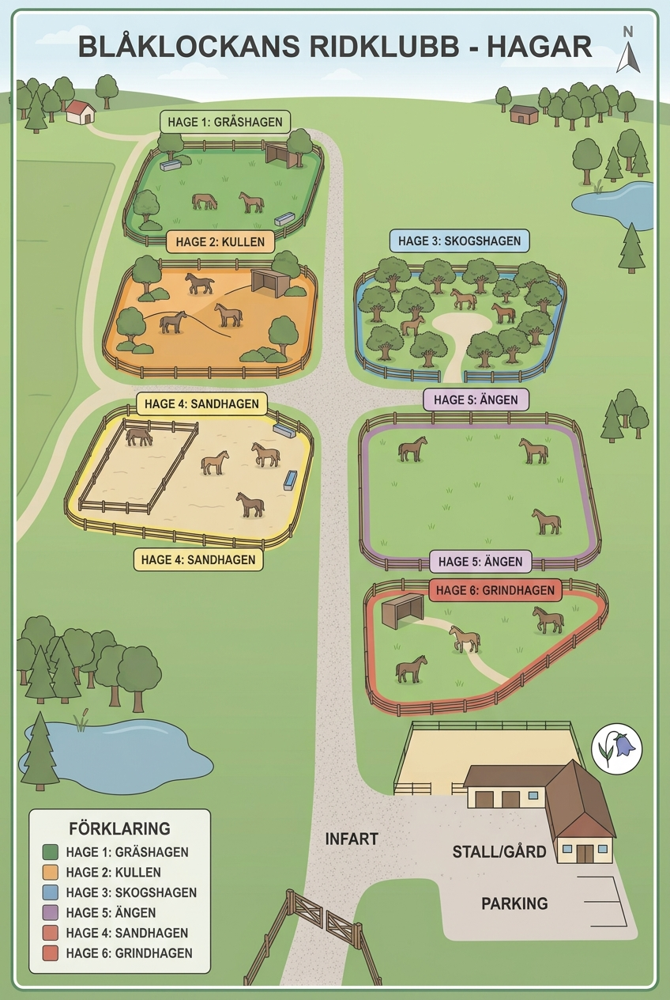

Hagschema

Väder idag:
"
Dessa hästar vill ha
täcke på sig:
Att göra-lista
Här kan du bocka av utförda sysslor. Listan är endast ett verktyg och informationen visas bara för dig.


Här kan du bocka av utförda sysslor. Listan är endast ett verktyg och informationen visas bara för dig.